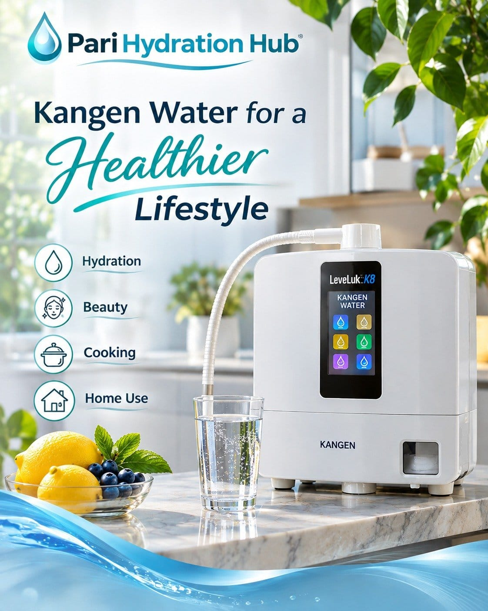

A plain-English answer — what it is, how it works, the five waters it makes, and how you actually get one.

A Kangen Water® machine is a countertop water ionizer made by Enagic, a Japanese company founded in 1974. It connects to your kitchen tap, filters the water, and then uses electrolysis to make five different waters — from pH 2.5 to pH 11.5 — for drinking, cooking, beauty, and cleaning. “Kangen” is Japanese for “return to origin.”
A friend mentioned it, a video popped up, and you typed “what is a Kangen Water machine?” into Google or ChatGPT. Start here — facts first, no sales talk.
Corona ranked worst in California for tap-water contaminants found above health guidelines — 25 of them, per Echo Water’s September 2026 analysis of EWG and EPA data. A machine like this starts by filtering the water that comes out of your tap.
You want to know what each water is for, which ones are for drinking, and how buying one works — before you talk to anybody.
Kangen Water® is Enagic’s registered name for the alkaline drinking water its machines produce — it is a brand name, not a kind of water any company can sell. Enagic has made these machines in Japan since 1974, and every machine is built in Enagic’s own factory there.
The machine sits on your kitchen counter (Enagic also makes an under-counter model) and connects to your tap. Inside, your tap water passes through a built-in filter first, and then the machine does its main job — electrolysis.
Tap water runs through the machine’s built-in filter, which reduces chlorine and sediment before anything else happens.
The filtered water flows over platinum-coated titanium plates. An electric charge splits it into two streams — alkaline water and acidic water.
Tap a setting on the screen and the machine pours that water. On the K8, voice prompts talk you through each selection.
Change the setting and the same tap gives you a different water. Two of the five are for drinking — the other three are for skin, food prep, and cleaning, and they are not for drinking.
The everyday water the machine is named for — the one you’ll pour most. For your daily glass, the kettle, tea and coffee, and cooking rice, pasta, soups, and stews.
For drinkingNeutral water — filtered, with no electrolysis. This is the one for preparing baby formula and for taking medication, or any time plain, clean water is exactly what’s needed.
For drinkingGently acidic, close to the pH of your skin. Use it for washing your face and as a rinse that leaves hair feeling smooth.
Not for drinkingStrong alkaline water for the kitchen jobs plain water can’t manage — washing fruit and vegetables and loosening oil and grime, without a harsh spray.
Not for drinkingStrong acidic water made for cleaning — wiping down kitchen surfaces, cutting boards, and the sponges and cloths you use every day.
Not for drinkingThe machine in the photo is the LeveLuk K8. The facts:
Platinum-coated titanium — more plates, stronger ionization.
The full range, pH 2.5 to 11.5, from one machine.
A full-color screen that tells you which water you picked.
The machine alerts you when the filter is due.
From Enagic, on a machine built to be used every day for years.
Built in Enagic’s own factory — the company has made ionizers since 1974.
Many people buy this machine because they love the taste, want fresh water at the tap instead of bottles, and like replacing cleaning sprays with water from the same machine. But there is no strong scientific proof that alkaline water cures or prevents disease, and this page will not claim that. If a health question matters to you, ask your doctor — and be careful with anyone who promises you a cure in a glass.
Enagic does not sell its machines in regular stores or on Amazon. They are sold through independent distributors — that is how the company has always done it, and it is why your order and warranty are registered in your own name. Here is how it works with me:
Tell me what you want the water for — drinking, cooking, a big family, a small kitchen. I’ll help you pick the right model. No pressure, and questions are free.
The order goes in under your name. You can pay in full, or ask me about Enagic’s payment plans — I’ll walk you through the form, step by step.
It arrives with its manufacturer warranty, and I stay your contact for setup questions after it’s in your kitchen.
Want to look at the official range first? Enagic’s own store is at e-store.enagic.com — and when you’re ready to order, come back to a distributor so your purchase is registered properly.
Pervin Moulvi · Pari Hydration Hub · Corona, California · (951) 256-6556 · WhatsApp
Page 1 of the water Q&A series · Written November 2026
Kangen Water® and Enagic® are registered trademarks of Enagic International Co., Ltd. Pervin Moulvi is an independent Enagic distributor.